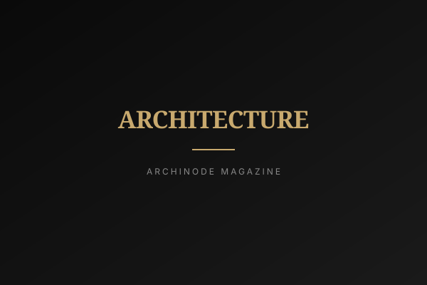
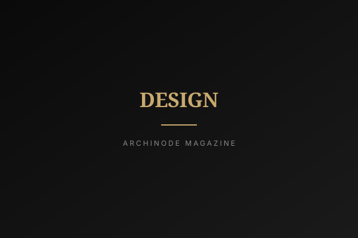

2026년 9월 9일 부산, 2026 월드스마트시티엑스포에서 국토교통부가 K-AI 시티 실행전략을 발표했다. 세 개의 기본방향과 다섯 개의 핵심과제, 2027년까지 법 기반을 마련하고 2030년까지 AI 특화 실증도시에서 성과를 내겠다는 일정표가 담겼다. 목표는 AI 3대 강국 대표 도시다. 발표문을 세 번 읽고 나면 남는 질문은 하나로 좁혀진다. 이번에는 다를까.
세 번째 판본
K-AI 시티는 갑자기 등장한 이름이 아니다. 한국 스마트시티 정책의 세 번째 판본에 가깝다. 2000년대 후반의 U-City는 도시에 망과 센서를 깔면 도시가 똑똑해진다고 믿었고, 관제센터는 남았지만 서비스는 남지 않았다. 2018년 지정된 국가시범도시 — 세종 5-1생활권과 부산 에코델타시티 — 는 백지 위에 모델 도시를 그려 그 성과를 전국에 퍼뜨리겠다는 접근이었다. 정책의 초점이 망에서 도시로, 다시 지능으로 옮겨온 셈이다.
도시와 AI를 국가 의제로 묶는 흐름 자체는 이미 여러 갈래로 진행 중이다. 싱가포르는 도시 전체를 하나의 행정·데이터 체계로 통합하는 방향을, 사우디는 사막 위에 새로운 도시 형식을 선언하는 방향을, 일본의 한 기업형 실증도시는 도시를 짓기보다 도시를 실험실로 쓰는 방향을 택했다. 그래서 AI 특화 실증도시라는 형식 자체는 세계적으로 새롭지 않다. 한국이 놓인 자리가 특이한 것은 셋의 중간이라는 점이다. 백지에서 시작하지는 않지만 신도시를 지어본 경험이 세계 최상위권이고, 단일 기업이 끌지 않지만 건설·통신·제조 생태계가 두껍다. 세 번째 기본방향이 수출형 도시인 이유도 여기에 있다.

"형식은 새롭지 않다. 새로울 수 있는 것은 실증에서 나온 규칙을 보통 도시의 법으로 옮기는 속도다."
다섯 개의 더하기 동사
다섯 개의 핵심과제를 동사만 떼어놓고 보면 발굴, 구축, 조성, 확산, 마련이다. 다섯 개 모두 무언가를 더하는 동사다. 전략이라는 단어가 무게를 가지려면 하겠다는 목록만큼 하지 않겠다는 선택이 있어야 하는데, 여기에는 뺄셈이 없고 우선순위도 사실상 드러나지 않는다. 다섯 가지를 모두 하겠다는 말은, 예산과 행정력이 부족해지는 순간 무엇을 먼저 놓을지 아무도 모른다는 뜻이기도 하다. 그리고 그럴 때 가장 먼저 밀리는 것은 대개 성과가 눈에 보이지 않는 법·제도다.
일정도 정치를 견뎌야 한다. 2027년 입법, 2030년 성과라는 구간에는 선거와 정권 교체 가능성이 들어 있다. 한국 도시정책에서 이름이 바뀌지 않고 5년을 넘긴 브랜드는 드물었다. U-City는 조용히 사라졌고, 국가시범도시는 이름은 남았으나 첫 발표의 온도를 유지하지 못했다. 더 무거운 질문은 따로 있다. 특별한 예산과 특별한 규제 조건을 받은 구역에서 되는 일이, 그런 조건이 없는 보통 도시에서도 되는가. 국가시범도시가 이미 남긴 이 질문에 대한 답이 선도모델 확산이라는 네 글자 안에 충분히 들어 있는지는 아직 확인되지 않았다.
따뜻하다는 말
첫 번째 기본방향은 사람 중심의 따뜻한 미래도시다. 도시가 따뜻하다는 말은 원래 온도의 비유가 아니었다. 골목 끝에서 누가 나를 알아본다는 뜻이었고, 늦은 밤 불 켜진 가게가 하나쯤 남아 있다는 뜻이었다. 새 도시의 아침을 상상해 본다. 눈을 뜨기 전에 커튼이 열리고, 현관 앞에 어젯밤 주문한 것이 놓여 있고, 골목에서 작은 바퀴 소리가 지나간다. 편리하다. 다만 그 하루에서 조용히 빠져나간 것도 있다. 경비 아저씨와 나눈 두 마디, 물건을 가져다준 사람의 얼굴. 마찰이 사라진 자리에서는 접촉도 함께 사라진다. 도시가 매끄러워질수록 우리는 서로에게 덜 걸린다.
그리고 실증이라는 단어가 남는다. 실증도시에 산다는 것은 완성된 도시가 아니라 시험 중인 도시에 산다는 뜻이고, 시험에는 실패가 포함되어 있다. 그곳의 주민은 시민인가, 피실험자인가. 둘을 가르는 기준은 기술의 수준이 아니라 훨씬 단순한 것들이다. 그만두겠다고 말할 수 있는가. 바꿔달라고 요구할 창구가 있는가. 내 하루가 자료가 되는 일에 동의한 적이 있는가. 셋이 보장되면 그는 시민이고, 하나라도 없으면 조용히 피실험자가 된다. 오래 사랑받은 동네는 대부분 위에서 설계된 곳이 아니라 살면서 손때가 묻은 곳이었다. 따뜻함은 설치되는 것이 아니라 시간이 지나야 생기는 것이기 때문이다.

2030년에 확인할 것
그러니 이 전략을 평가할 시점에 세어야 할 것은 실증도시의 개수가 아니다. 실증에서 얻은 규칙이 보통 도시의 법령으로 몇 줄이나 옮겨졌는지, 특별한 조건 없이도 같은 서비스를 굴릴 수 있게 된 지자체가 몇 곳인지, 그리고 그 도시에 사는 사람이 자기 하루에 대해 아니라고 말할 수 있는 창구를 갖게 되었는지다. 다섯 개의 더하기 동사 중에서 끝까지 살아남는 것이 무엇인지도 그때 드러날 것이다. 덧붙이는 일은 발표로 시작되지만, 남기는 일은 대체로 조용히 진행된다.
편집장 코멘트
이 전략에서 가장 중요한 과제는 다섯 번째에 놓여 있다. 법·제도는 성과 사진이 남지 않는 일이라 늘 뒤로 밀리지만, 정권이 바뀌어도 남는 것은 결국 그것뿐이다. 기술은 실증도시 안에서 증명되고, 정책은 실증도시 바깥에서 증명된다. 우리가 2030년에 다시 이 기사를 펼칠 때 보려는 것은 거기다.